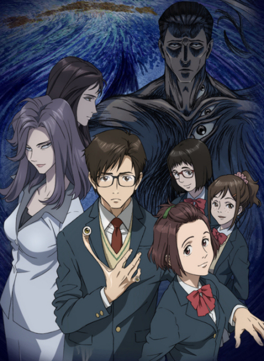

lastic Memories (Purasutikku Memorizu) is a Japanese science fiction anime television series based on the original story conceived by *Naotaka Hayashi*, who also wrote the screenplay for the show which was directed by *Yoshiyuki Fujiwara* and produced by *Doga Kobo*. The original characters for the anime series were designed by *Okiura*. The opening music theme is ‘Ring of Fortune’ by Eri Sasaki and the ending score is ‘My star of a Morning Glow’ (‘Asayake no Starmine’) by *Asami Imai*.
The storyline of this charming, coming-of-age anime show that takes place in a Japanese metropolis in the near future, centres on two main characters: teenage male Tsukasa Mizugaki, who, after failing his college admission exams due to unspecified health problems, after his father’s intervention eventually gets a job at Terminal Service One, where he meets the second main protagonist of the series, female humanoid android Isla.
We learn that SAI Corp, the leading android production company, has recently introduced the Giftia, an advanced, state-of-art android model with the most human-like qualities to date. Since the Giftias not only look and act exactly like human beings, but also possess human-like emotions and empathy, they are quickly integrated into society, often taking roles of child carers, companions for the elderly, surrogate offspring for childless couples or substitutes for lost loved ones. The only downside of this new android model is its lifespan: each Giftia lasts exactly for 81,920 hours (about 9 years and 4 months), after which needs to be decommissioned. If any Giftia exceeds its expiration date, it starts to irreparably break down, beginning with small onsets of memory loss, gradually progressing to a rapid deterioration of the Giftia’s psyche, eventually ending with the total personality disintegration often accompanied by wanton outbreaks of violence.
To prevent Giftias’ hosts, and the members of public, from coming to harm, institutions called Terminal Services are established with the task of retrieving Giftias who come close to the end of their lifespan from their proprietors, and erasing their memories, after which they can be reassigned to a new owner, completely oblivious to their previous assignments and hosts.
As the owners tend to develop a strong emotional attachment to their Giftias and because the expiring androids are more susceptible to listen to arguments from fellow Giftias, in order to perform this sensitive job as efficiently and tactfully as possible, the Terminal Service employees work in two-member teams, each consisting of a human (a ‘spotter’) and a Giftia (a ‘marksman’). Shortly after starting his work at the Terminal Service One, Tsukasa is teamed-up with Giftia Isla, a veteran of the department, who is now nearing the end of her own lifespan.
The purple-haired, twin-tailed girl quickly wins over Tsukasa’s heart, despite of (or because of?) her rather cute clumsiness, mostly exhibited by a tendency to trip and fall over various objects. Their relationship develops further after their employer (to Tsukasa’s big consternation-slash-delight) suggests that Tsukasa moves in with Isla to strengthen-up their work-team ties.
Among other employees at the Terminal Service One stand out *cat-eared* Michiru Kinushima, Tsukasa’s superior by one year, who seems to be developing feelings for Tsukasa, but refuses to admit it. As she was raised by a Giftia, she strongly empathises with the people who were also brought up by Giftias. After her Giftia guardian came close to the end of his lifespan, Michiru had tried to prevent his retrieval, resulting in him becoming a highly dangerous ‘Wanderer’, who had to be eventually shot down by members of a private security firm. This traumatic experience was a primary reason why Michiru later joined Terminal Service One.
Then there is Kazuki Kuwanomi, who is Tsukasa’s line manager at Terminal Service One. She was once Isla’s spotter and as a result is highly protective of her former partner – downright to trying to intimidate Isla’s new co-workers, which Tsukasa finds out to his detriment. Kazuki has lost her leg in a botched attempt to retrieve Michiru’s android ‘father’ three years ago.
Last Tsukasa’s co-worker worth mentioning is Yasutaka Hanada, who has been working at Terminal Service One for ten years, so is considered to be something of a veteran employee. He suffers from a total lack of motivation, and a laid-back attitude, and – drawing on his playboy-ish experiences – often gives Tsukasa tips (although not always very shrewd) on how to win over Isla, who at first resists Tsukasa’s awkward advances.

Slowly, Isla warms up to Tsukasa, but just as their relationship progresses to a romantic phase, and they both finally fall in love with one another, Isla is nearing the end of her lifespan…